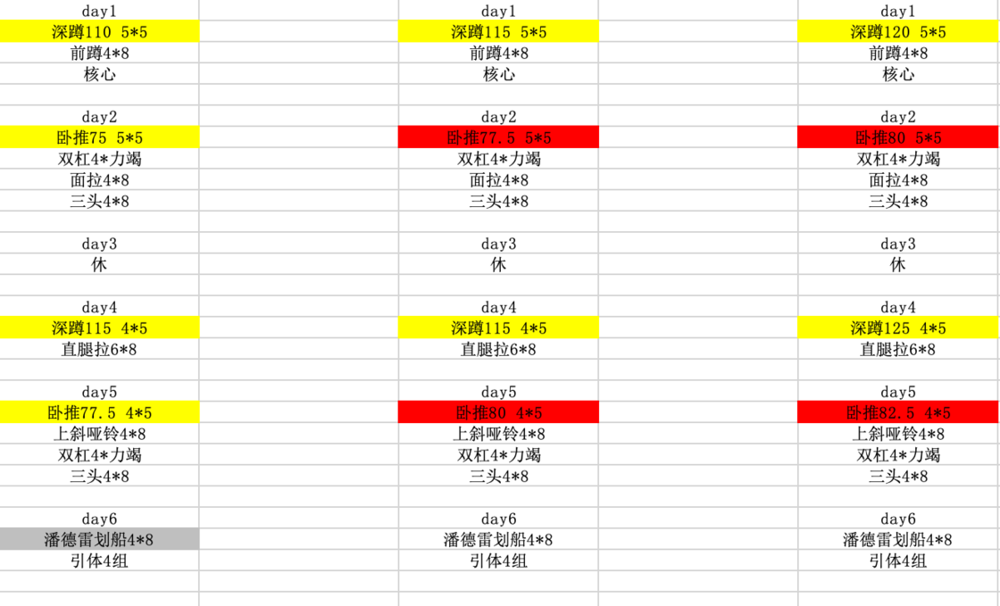
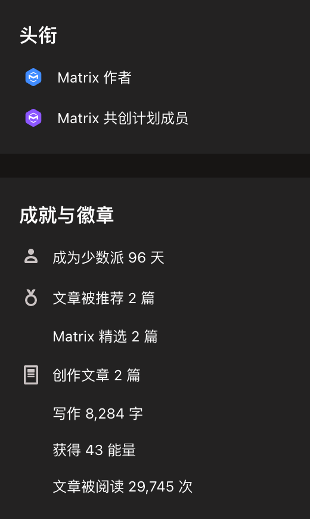

原文首次发表于少数派(2023.01.16)。
在又又又又一次论文被拒后，我想写一篇文章，既为自己，也为其他想要或正在读博的同学。
开导一个人，摆事实比讲大道理往往更有用。摆什么事实呢？比我过得更衰的事实。最开始读博的时候，我不怎么和身边的人交流，因为我觉得没有意义。结果由于刚刚开始科研工作，我经常怀疑自己「难道只有我会碰到这种问题？」。后来和周围人的交流增多，加上看到其他博士分享的博客文章，我渐渐发现「哈，原来每个人都碰到过和我相同的问题呀」。这让我渐渐的有一种安全感。这些人分享的经历，在很大程度上帮助我走出emo，避免陷入自我怀疑。
因此，我也想分享一下迄今为止读博的经历和感受。
如果问一个本科生是否想读硕士，他可能毫不犹豫地回答想读。但是如果问他是否想读博士，往往回答是「博士毕业好难，我不敢读」，或者是「我还没想好，先读个硕士再说吧」。
博士毕业难吗？难，但是要分情况。
如果一名博士生，每天不看文献、不想idea、不做实验，只想着吃饭睡觉打游戏，那确实很难按时毕业。但是这样的博士生毕竟是少数。普遍来看，一个人选择了读博，就会为拿到毕业证而努力。
好的，我已经打定主意要为科研献身，我会在读博期间全身心投入到科研工作中，为了毕业而努力。打住！谁说博士生就要全身心投入到科研工作中呀？导师同意你投入科研工作吗？横向项目谁做呀？实验室财务报销等杂活谁做呀？流水的硕士，铁打的博士。不同于硕士生，更多的归学院统一管理。博士生的管理权归导师，所以要是运气不好碰到一个无良导师，恐怕连努力科研的机会都没有。
况且，努力了就会有结果吗？不好意思，不一定。即使导师喜欢科研，并且你和他合作写出一篇论文，这篇论文被接收的概率通常只有不到20%。
那我成果傍身，总能躺平等毕业了吧。
不好意思，还是不一定。因为毕业政策可能会变，随着社会越来越卷，实验室的毕业要求也会水涨船高。 某实验室，在没有学生发出顶级会议论文（计算机学科更加喜欢将重要成果发布在会议上）之前，毕业要求和学院的毕业要求一致。结果某一年，一个学生在读期间发表了一篇顶会论文，随后该实验室的毕业要求就提高到发表一篇顶会论文才能毕业。
我承认我有赌的成分
在我看来，读博就是赌博。因为在拿到毕业证之前，你完全不知道会以怎样的方式度过生命中宝贵的5年（也许更久）时光。
既然要追求刺激，那就贯彻到底咯。
但是我没有多犹豫就做出了读博的决定。本科最后一年，很多老师都鼓励我们有条件就继续深造，最后拿个博士学位。现在想想也很合理，因为他们都是博士呀，不拿个博士学位，怎么站在那个讲台上。不过当时动心的理由是，她们说「博士和本硕不是一条赛道的，毕业后博士更吃香」。所以我在保研时见到导师的第一句话就是「老师，我想读博」。
严格来讲，我才正儿八经读了半年博。四月份，在隔离酒店完成转博答辩；九月份，拿到录取通知书。在此之前，虽然已经进实验室一段时间，但是我没有因为各种困难退缩。也许会碰到实验效果不显著，或者为论文撰写抓耳挠腮，但是我觉得只要这项工作完成，一切就会好起来。然而，当一项工作完成，写出的论文却屡投屡拒时，才是对我的真正考验。因为这些失败，某种程度上无迹可循。
我能够顶住论文多次被拒，但是年底这一次被拒的过程还是刷新了我的认知。离奇在哪呢？因为阴差阳错的，这次审稿过程对我不再是黑箱操作。其中细节暂且不表，最终我的论文被拒，但是同实验室一些分数比我低的论文反而被接收，让我非常难受。
在此之前我以为失败是因为自己做得不够好。但是如何定义「好」呢？不同的研究方向，无法用统一指标评价成果好坏。同样的，审稿人也许并不熟悉我的研究方向，因此他有一定概率看心情决定了论文是否被接收。此外，学术圈也是圈，如果碰到认识的人审稿，难免会手下留情。
经历了这次审稿，我更深刻地理解了读博就像赌博。既然是赌博，就会有输赢，且输的都是大多数。
除开了年底的这一次被拒，整个2022年都不太顺利。年初，在导师的要求下，提前返校。火车抵达站台的那一刻，学校通知不准学生进校，因此只能在校外找个酒店住。两个月后，终于可以进校了，开始工作。到了年底，这些工作都没有什么结果。投的论文接二连三地被拒；由于寒气，立项的项目重点追求落地，不出意外被毙了。2022年的最后几天，还染上新冠，一个人在宿舍熬过七天。
今年我的关键词恐怕就是「运气差」吧。新年我要买个佛放在实验室，有空就拜一拜。
读博是一个「高风险，高回报」的行为，因此必然伴随着「高压力」。一篇完整的论文能够提出问题，并给出解决方案。可惜生活不是论文，我无法消除读博伴随的高压力。但是，我确实摸索出一些方法，让我能够与高压共存。
接下来的内容看似正确，也可能没什么用
读博虽然是一个人的战斗，但是与他人建立起稳定和高质量的关系，会大大提高幸福感。就个人而言，当我与周围人更多地建立关系，我会从不稳定转向一个稳定的状态。
我们的格局不是一捆一捆扎清楚的柴， 而是好像把一块石头丢在水面上所发生 的一圈圈推出去的波纹。每个人都是他社会影响所推出去的圈子的中心。被圈子的波纹所推及的就发生联系。——费孝通《乡土中国》
当我第一次论文被拒时，我内心没有太大波动，因为我觉得毕竟是第一次投稿，积累经验而已。不过此前，大老板和我说「上一届有两个同学第一次投论文就被接收了，你们这一届要是一篇都没有接收，是不是说明能力不够？」，我对这句话耿耿于怀。
后来小老板和我说「你的这个论文分数还行，论文中不中更多的是看运气，不要太过在意。」还和我分享了很多他的投稿经历，以及告诉我怎样看待审稿人的意见。他的分享让我能很快走出emo情绪，不再对自己感到怀疑，并且改变了我对科研的认知。
论文中不中，还是得看运气：正如我前面所说，除了极少数论文质量很高，大部分论文中不中都是可以商量的。一篇论文是否被接收，需要看编辑和多位审稿人的意见，其中每一个人都很主观，所以投出去就只能听天由命咯。
审稿人是同行，不是权威：一开始，我觉得审稿人对论文的评价更加权威。但是随着科研经历的增加，以及周围人的讨论，我现在认为审稿人的意见为我提供了一个改进论文的角度。毫无疑问，只有自己最熟悉自己的研究内容，但是如何将自己的研究内容推广出去，不能仅靠对研究内容的了解。审稿人就像是影片公映前的内部试映。由于这是给不熟悉我研究内容的人看，他们的感受也代表了很多论文发表后读者的感受。通过审稿人的意见，我才能发现论文写作的盲点——有些我习以为常的概念，也许并不是所有人都知道，进而改进论文。
除了和实验室的前辈交流，我生活中还会和父母、女朋友、实验室同学吐槽科研不顺利。在这里想特别感谢两个人：
首先感谢我的女朋友，作为很亲密的人之一，能够接触到我脆弱的一面。并没有嫌弃我脆弱的一面，还能够不厌其烦地听我唠叨实验室的事。在我烦闷的时候，依旧给予我支持，稳定我的情绪。
= 其次感谢我的舍友，作为生活中离我最近的人，承受了我最多的负面情绪。很多时候，我的负面情绪不忍输出给女朋友，你就是首当其冲的输出对象。虽然我有时候对你破口大骂，但是你都没怎么还口，感谢你的不杀之恩。
Work life balance 是近年来流行的概念，很多人也逐渐意识到享受生活的重要性。然而对于大部分博士生来说，将工作和生活分开是一种奢求。
博士生的时间安排一般比较灵活，这也意味着任务随时都会降临。有一次小老板晚上八点钟会让我做个PPT，第二天要用。这导致我无法按照原计划维护自己的项目。此外，一些创造性的任务，往往很难预估其完成时间。有些时候想不出来就是想不出来。在研一刚刚接触科研时，我需要将真实世界的问题，用数学语言表达，简单来说就是想数学公式。那真的是在书桌前，抓耳挠腮，半天下不了笔，但是不把问题想出来我什么也不想干，导致我生活很没有规律。
但是后来我发现，这种状态完全没有必要。虽然我的时间安排可以很自由，但是这只是代表时间管理的职责，从以前的学校转移到个人身上了。所以如何做好时间管理是对我的一项考验。
很遗憾，我现在虽然为自己制定了一些时间规划，但是还无法很严格的遵守。遵守最严格的是我的训练计划。刚读研究生的时候，我和一些同学一起玩力量举。由于2022年上半年健身房都没开，从下半年开始我就依照训练计划去健身房。看着自己的训练重量一点点增加，不停地给我正反馈，也增加了我的幸福感。

我经常因为科研没有头绪，或者论文被拒，在一段时间内消沉。我可以做任何事，除了科研。但是即使我去做一些想做的事，总是有种负罪感，最终导致我的焦虑程度不降反增。
后来我想明白了，科研不在于短时间内的进度暂停，更重要的是能够长期保持健康的心态。所以在不想工作时，最应该做的是让自己快速恢复，而不是强迫自己在工位坐着，徒劳地想进入科研状态。于是我调整了自己的心态，告诉自己「你现在不适合科研，所以不管干什么都可以」，合理化我的摸鱼行为，心安理得地玩游戏、看书、看电影。这种心理状态的转变，反而有利于我从焦虑中恢复。
写惯了严谨的科研材料，我想写点轻松的文章找回重新做人的感觉。
最早与少数派结缘在2014年，彼时我上高中有了第一部手机，于是在网上搜罗各种玩机技巧，少数派是当时无法避开的网站。我很喜欢少数派「不需要登陆就能查看全文」，所以一直没有注册账号。大学有一段时间，我觉得少数派的内容是「为了效率而效率」，弃坑了一段时间。但是随着我从本科生变到研究生，工作内容变得复杂，我发现很多效率相关的问题只有少数派会讨论，因此我又回归了少数派。看来还是境界不够，害！
一直到了2022年，我觉得有必要为自己写点东西，于是注册了一个账户。看到自己已经成为「少数派」才寥寥几十天，有些许失落。但是转念一想，这代表着我真正参与到少数派的建设，也就释然了。

我的日常工作大部分时候是写各种材料，但是这些材料都是写给别人看的。写论文是给审稿人以及其他同行看的，写申请书是给专家评委看的。为了让别人快速地抓住核心，这些材料通常遵循固定的模板。我需要做的就是提炼项目的重点，并填到相应的位置。
写得多了，我觉得工作中的状态渐渐渗透到生活中——缺乏情感，惯于质疑。这时我就在想，我是不是应该为自己写点东西？我开始在少数派上发一些文章。我至今还记得，当我把第一篇文章的初稿给我女朋友看时，她说这篇文章就像是从英文翻译过来的中文，读起来太无聊了。我意识到写那些材料让我太紧绷了，因此写每一句时我都在想，我的结论是严谨的吗？会被读者质疑吗？我这么写合适吗？也许这篇的文章没有漏洞，但是更没有人想看。后来我慢慢尝试以一种放松的状态去写少数派的文章，告诉自己这不是写论文，让自己的文字没那么无情。
在少数派写作，我可以更少地思考逻辑，更多地倾注情感。我希望通过在少数派的写作慢慢积累不那么严肃的写作经验，最终能够写出一部科幻小说。同时，和少数派的读者互动，也让我有一种活着的感觉，在孤独的科研路上，远方的朋友还在陪伴。
时间酿酒 余味成花
我想很多博士生和我一样，经常陷入科研瓶颈。解决问题的办法有时只有等待。虽然我知道这很难做到，但我还是想说「沉下心，给自己充足的时间」，因为这是我们唯一能做的。
我还想多说两句。「努力不一定有用」，是我从学生身份转为打工人身份（博士生某种意义上也是打工人）后总结出来的经验。也许很多工作后的人同样有这种感觉。即然明晰了这一点，在碰到困难时，就更应该给自己一些时间。因为很多时候干着急并没有用，最终困难的解决还是靠时间。
希望2023年，我们都能行好运。如果没有，就祝愿我们习惯在困难中享受生活。